Фродо и кольцо
Следуя своему коварному плану, Голлум приводит Фродо в пещеру гигантской паучихи Шелоб
и там оставляет его в ловушке. Та кусает Фродо своим ядовитым жалом и заворачивает его в паутину,
но вернувшемуся Сэму удается прогнать паучиху.Думая, что Фродо мёртв, Сэм забирает Кольцо и решает
продолжить путь.
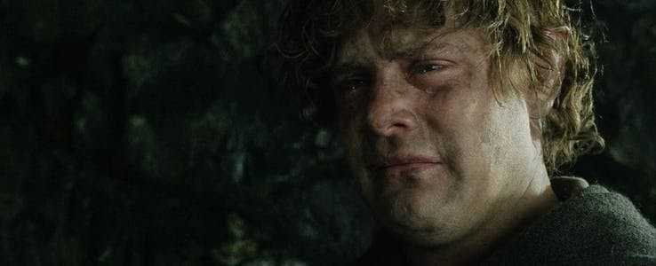
Секрет Шелоб
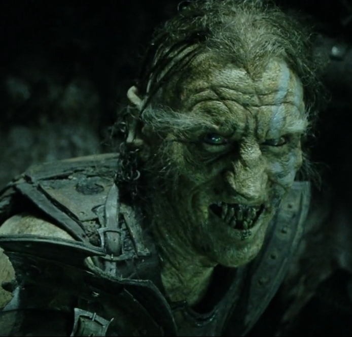
Проходивший мимо отряд орков захватывает Фродо, а спрятавшийся в пещере Шелоб Сэм узнаёт,
что хозяин жив (Шелоб лишь парализовала Фродо, а в паутину завернула, чтобы он стал мягким
как варёная рыба
и ей было легче разделать его, как подметили орки), и отправляется в крепость
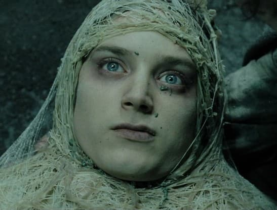
Кирит-Унгол к нему на выручку.Деля добычу, орки передрались друг с другом из-за
мифриловой кольчуги Фродо, и хоббитам удалось вырваться на
свободу.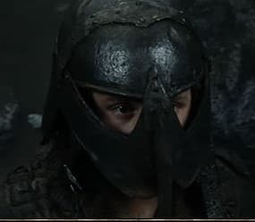
Сэм возвращает Фродо Кольцо, не успевшее подчинить себе его волю. Хоббиты на время надевают доспехи
орков и идут по Мордору.
Осгилиот
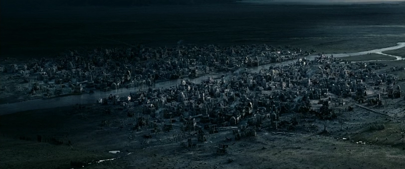
Тем временем вооружённые силы Мордора захватывают Осгилиат, город, бывший в свое время столицей
Гондора, стоящий на реке Андуин, начав войну с целью не допустить возвращения Арагорна на трон
Гондора. Это вынуждает Фарамира отступить в Минас-Тирит, перед воротами которого брат Боромира
получает помощь от Гэндальфа в бегстве от назгул.
Денетор II
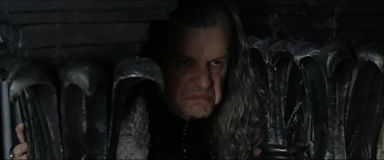
Королевский наместник Гондора был мудрым властителем,
но его разум был ослаблен горем.Вдобавок его младший сын Фарамир, рассказывает Гэндальфу и отцу о
встрече с Фродо. То, что Фарамир упустил Кольцо, приводит Дэнетора в ярость, и
он посылает Фарамира отбить у орков Осгилиат,но силы неравны.
Орки Готмога выкашивают смельчаков ливнем стрел и отряд гибнет, а Фарамир возвращается серьёзно
раненым и без сознаия. Думая, что сын умер, обезумевший Дэнетор пытается сжечь его и себя на
погребальном костре, но
Гэндальф и Пиппин вмешиваются и спасают Фарамира. Объятый пламенем Дэнетор гибнет,
прыгнув вниз из Цитадели.
Начало битвы
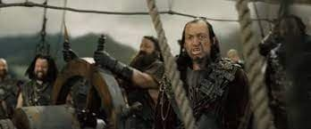
Поначалу битва идёт со значительным перевесом сил Саурона, которым удаётся взломать оборону Минас
Тирита и ворваться на его верхние ярусы, убивая всех без разбору. Более того, Митрандир сталкивается с
предводителем назгул и лишается своего посоха.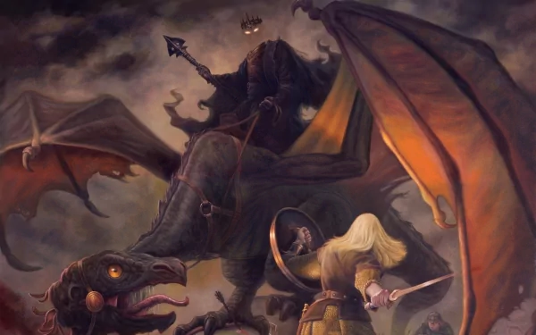 Однако на рассвете подходят всадники Рохана, давние союзники
Гондора.Конница Теодена наносит массированный удар по полчищам орков и
разгоняет их, но затем была вынуждена принять бой с отрядами харадрим. В составе рати Теодена на тот момент, хотя и тайно, оказались хоббит Мерри и племянница
Теодена Эовин, переодетая мужчиной.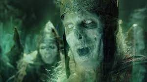Ими был повержен Король-Чародей Ангмара, которому в давние времена было
предсказано о том, что он падёт не от руки смертного мужа. Но при этом был смертельно ранен и король Рохана
Теоден, перед кончиной он и Эовин успели проститься друг с другом.
Пираты
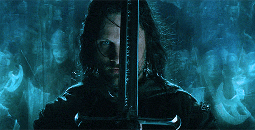
На помощь Мордору должны были прийти чёрные корабли с пиратами Умбара, однако прошедшие Тропами Мёртвых Арагорн,
заручившиеся поддержкой Войска Мертвецов, перехватили корабли. Массивная армада призраков с лёгкостью сметает армию Харада,
затем входят в Минас-Тирит.Арагорн держит своё слово и освобождает Короля Мёртвых и его
воинство от нарушенной ими клятвы тысячелетней давности.
Наследник трона Гондора исцеляет Фарамира и Эовин, и те влюбляются друг в друга.
На помощь Мордору должны были прийти чёрные корабли с пиратами Умбара, однако прошедшие Тропами Мёртвых Арагорн,
заручившиеся поддержкой Войска Мертвецов, перехватили корабли. Массивная армада призраков с лёгкостью сметает армию Харада,
затем входят в Минас-Тирит.Арагорн держит своё слово и освобождает Короля Мёртвых и его
воинство от нарушенной ими клятвы тысячелетней давности.
Наследник трона Гондора исцеляет Фарамира и Эовин, и те влюбляются друг в друга.
Последняя битва
После битвы состоялся Совет, было принято решение — подойти к воротам Мордора и вызвать Саурона на сражение.
Без шансов на победу — только отвлечь Око, дав возможность Фродо исполнить миссию.В итоге армия Запада во главе
с Арагорном идет к Чёрным Вратам Мордора и вступает в бой с ордами Саурона.
Одновременно измученные хоббиты добираются до подножия Ородруина, Сэм на своих плечах
поднимает его на гору. У самой расщелины на них безуспешно нападает Голлум.
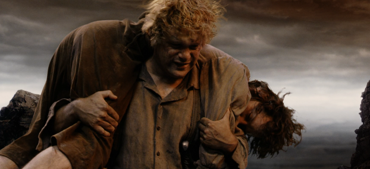
Стоя на краю пропасти, Фродо, не в силах уничтожить Кольцо, на глазах у Сэма объявляет
его своим и надевает, после чего Голлум, снова напав, откусывает ему палец с Кольцом.
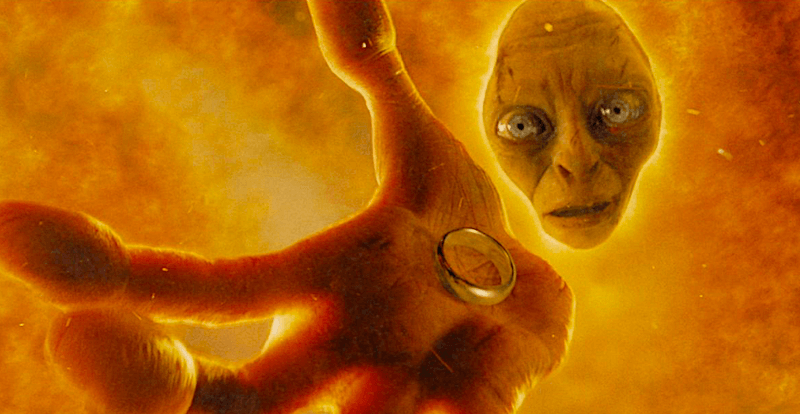
Фродо после недолгой борьбы падает в жерло Ородруина вместе с Голлумом,
но удерживается за скалу.
Сэм спасает друга, а Единое Кольцо плавится. Одновременно Саурон окончательно
прекращает свое существование, Барад-Дур рушится, а войско Мордора обращается в бегство, понеся катастрофические
потери.
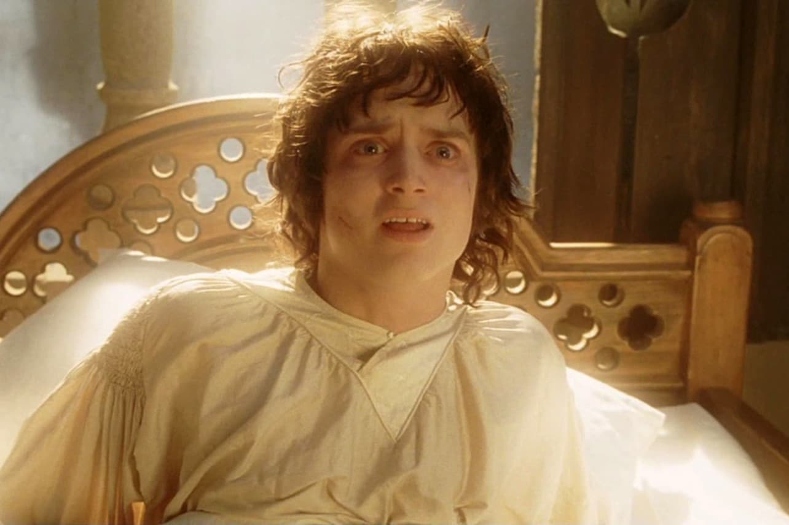 Потерявшего сознание Фродо и Сэма со склонов извергающегося Ородруина спасает Митрандир с помощью Великих
Орлов. В Минас-Тирите Фродо приходит в себя и воссоединяется с остальными членами бывшего Братства Кольца.
Судьба Арагорна
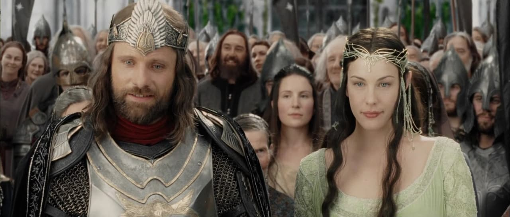
Арагорн становится королём Гондора и женится на эльфийской принцессе Арвен. Хоббиты возвращаются в Шир.
Сэм женится на Рози Коттон. Постепенно Фродо понимает, что не сможет вернуться к обычной жизни,
и решает уплыть вместе с эльфами на Запад. Хоббиты провожают их в Гавань.На том же корабле покидает Средиземье
Гэндальф.